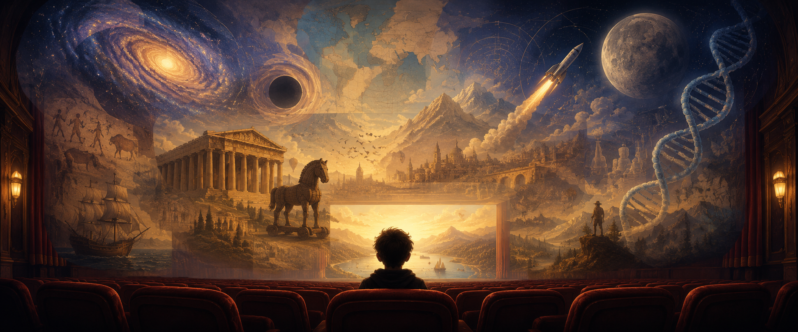

Great films are a doorway. Each lesson watches one — then digs into the real history, science, philosophy or myth underneath it.
Every film here is a full speaking lesson at two levels (B2/C1 and a simpler A2/B1 twin): the key words, the story, one grammar focus the film itself shows off, and a "Real Story" tab that separates the true science and history from the movie magic. The films give students plenty to say — which is the whole point.
Many of the Real Story tabs open a door onto the companion series — Short History, Long Echoes, where the same true story is a full lesson in its own right.